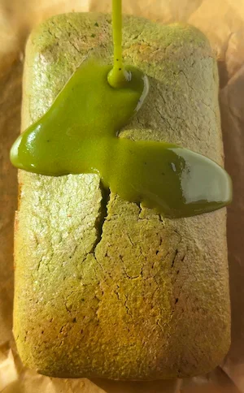

Mini Matcha Loaf Cake (gluten free, dairy free + refined sugar free)
i am a big fan of a mini cake and this mini matcha loaf really did not disappoint, and it's so cuteee. it's soft, packed with matcha flavour, naturally gluten free, dairy free and refined sugar free without tasting like any of those things hehe. this mini matcha loaf cake is another small batch recipe that is super simple to make and topped with a matcha monk fruit icing that ties the whole thing together. if you're a matcha lover, this one is going straight into your regular baking rotation. it feels super light yet it still satisfies your sweet tooth which i love.
the hero ingredient alongside the matcha is pumpkin seed butter! i want to give it a well deserved love letter moment because it's such an underrated ingredient that i rarely see used in baking. pumpkin seed butter comes from (you guessed it…) pumpkin seeds and it has a mild almost sweet nutty flavour that works really beautifully with matcha without overpowering it. it gives the cake a lovely moist crumb and it's also packed with magnesium, zinc, iron and healthy fats which make it hormone supporting. so it's doing a lot nutritionally while also making the cake taste good and look super vibrant. also if you need a nut free alternative, pumpkin seed butter is your friend since it is a seed butter instead of a nut butter (just make sure the brand you get has no cross contamination if you have a nut allergy!). i discovered pumpkin seed butter when i was looking for an alternative to pistachio butter which costs an arm and a leg and that unfortunately adds up after multiple failed testing rounds! but with that said… pistachio butter is the perfect substitute for pumpkin seed butter in this recipe as it enhances the green colour of this mini matcha loaf cake. if you can't find pumpkin seed butter or pistachio butter then a runny tahini, cashew butter or almond butter all work too. just note that they'll each bring a slightly different flavour than the intended pumpkin seed butter but they are neutral enough to work well in this recipe.
this mini matcha loaf cake calls for 1/2 a tablespoon of matcha to start, but adjust to your own preference. if you love a strong matcha flavour, you can add more (or less). i find that half a tablespoon is enough for the matcha to come through without leaning into grass taste territory but you know your preference best! one tip that i really don't want you to skip: always sift your matcha before adding it to the dry ingredients. matcha powder clumps really easily and if you skip this step you can end up with little pockets of concentrated matcha in the cake rather than an even flavour throughout. it takes about 30 seconds and makes a real difference to the final bake. beyond the flavour, matcha is rich in catechins and L-theanine, a combination that supports calm, focused energy and has antioxidant and anti-inflammatory properties. matcha is also rich in caffeine so that makes this mini matcha loaf cake the perfect mid-day pick-me-up sweet treat or snack.
the flour blend is a combination of oat flour and almond flour, and together they create a crumb that feels much more indulgent than you'd expect from a gluten free bake. the oat flour keeps things light and provides gentle structure, while the almond flour adds moisture and a little denseness that stops the cake from drying out. it's a combination i come back to again and again in my baking because it works so well for gluten free bakes. if you need the cake to be strictly gluten free, make sure to use certified gluten free oat flour as standard oats can sometimes be cross contaminated during processing.
the icing is where you can really make it your own. my go-to is a simple matcha and monk fruit mixture which keeps the whole cake refined sugar free and gives it that pretty soft green finish. i just eyeball this and hope for the best! it's approximately a couple of tablespoons of powdered monk fruit and half a teaspoon of matcha, mix, then pour in tiny amounts of water until it comes together to a runnier texture. if you want something richer and more indulgent, a melted white chocolate and matcha drizzle is absolutely stunning and sets into a gorgeous glossy coating. a classic matcha and icing sugar glaze also works beautifully if you're not worried about keeping it refined sugar free. whatever you choose, wait until the cake has cooled completely before icing or it will melt straight off lol. you can also opt to completely omit the icing and that tastes just as delicious.
this is a two bowl method recipe, meaning one bowl for the dry ingredients and another for the wet, then we combine them into one. this method works best for this mini matcha loaf cake as we want the matcha to be well incorporated into the dry ingredients before folding them into the wet, that way we get no lumps of matcha and don't overmix the batter. make sure the matcha is sifted into the dry ingredients! fold the dry into the wet and if your nut or seed butter is particularly thick, add that tablespoon of milk or water to loosen things up before combining. pour into a lined mini loaf tin and bake at 160°C fan for 35 to 45 minutes. start checking at 35 minutes with a toothpick and pull it out as soon as it comes out clean with just a few moist crumbs. the almond flour and pumpkin seed butter keep the crumb naturally quite moist so it can dry out if it goes too long. as with all baked recipes, the baking time will vary depending on your oven and altitude. the mini matcha loaf may need a longer bake time if your oven runs cooler.
if you love baking with matcha, then i have just the recipes for you! from my no bake matcha chocolate cups and matcha ganache bars to my 4 ingredient matcha marshmallows and gooey strawberry matcha cookies.
Frequently Asked Questions
How should I store this mini matcha loaf?
Store in an airtight container at room temperature for up to 2 days or in the fridge for up to 4 to 5 days. note that the fridge can dry out the crumb of the cake slightly. for longer storage, you can freeze the cake for up to 1 month, best frozen without icing.
Can I substitute the pumpkin seed butter?
yes, the best substitute would be pistachio butter as it shares that vibrant green colour that pumpkin seed butter has. it also elevates the flavour profile of this mini matcha cake. cashew butter and almond butter are both great neutral options that won't dramatically change the flavour. tahini works well for a nut free version and complements the matcha. technically any nut or seed butter can work but just know that stronger flavours like peanut butter will change the overall taste of the cake quite a bit, so the more neutral butters give the best result. if your choice of nut or seed butter is thick, mix in a tablespoon of milk or water until it thins out. stiff nut butter won't incorporate properly and can make the batter dry.
What matcha should I use in a loaf cake?
both ceremonial and culinary grade matcha work here. organic ceremonial grade has a more vibrant colour and slightly sweeter flavour while culinary grade tends to be more intense and slightly more bitter. either works well in this cake, just adjust the amount to your taste. always sift it before adding to the dry ingredients so that you don't get lumps of matcha in the cake.
How do I know when the mini matcha loaf cake is done?
insert a toothpick into the centre of the cake starting at 35 minutes. it should come out clean or with just a few moist crumbs attached. if it comes out with wet batter or a lot of crumbs, give it another 5 minutes and check again. the top should look set and the edges may be slightly browned. the baking time will vary depending on your oven.
Is this cake gluten free?
yes, the recipe is naturally gluten free as it uses oat flour and almond flour rather than regular wheat flour. if you have coeliac disease or high gluten sensitivity, make sure to use certified gluten free oat flour as standard oats can sometimes be cross contaminated with gluten during processing.
What icing options can I use?
the refined sugar free option is a matcha and monk fruit mixture, which i love because it keeps the whole cake in line with the rest of the ingredients. if you want something richer, a melted white chocolate and matcha drizzle is absolutely stunning and sets into a beautiful glossy coating. a simple matcha and icing sugar glaze is also lovely but note that it won't be refined sugar free. whatever you choose, wait until the cake has fully cooled before icing, or you can completely omit the icing and eat the cake as is!
Can I make this in a regular loaf tin?
technically you can, but the batter quantity is really designed for a mini loaf tin, so in a full size loaf tin it will be quite thin and may bake much faster. i recommend sticking to a smaller tin for the best result. I use a 16cm x 8cm glass mini loaf tin for this recipe.
Why do I need to sift matcha in baking?
matcha clumps easily and skipping this step can leave concentrated pockets of matcha in the cake rather than an even flavour throughout. it will also create green lumps that aren't as visually appealing lol.
Pro Tips
- Always sift the matcha before adding it to the dry ingredients.
- If your nut or seed butter is thick, add the tablespoon of milk or water to loosen it before folding into the batter.
- Let the cake cool completely before adding any icing or slicing.
Mini Matcha Loaf Cake

Ingredients
Icing options (choose one): matcha + powdered monk fruit sweetener mixed to a drizzleable consistency (refined sugar free) / melted white chocolate + pinch of matcha / icing sugar + matcha + splash of water
Instructions
- Step 1: Preheat the oven to 160°C fan.
- Step 2: Add the wet ingredients (eggs, melted coconut oil, pumpkin seed butter, maple syrup and vanilla) to a bowl and mix until combined.
- Step 3: In a separate bowl, combine the oat flour, almond flour, baking powder and sifted matcha.
- Step 4: Fold the dry ingredients into the wet until just combined. If your nut or seed butter is thick, add a tablespoon of milk or water now and fold through.
- Step 5: Pour into a lined mini loaf tin and bake for 35 to 45 minutes, until a toothpick inserted into the centre comes out clean.
- Step 6: Let the cake cool completely before adding your chosen icing.
- Step 7: Slice and enjoy!
Nutrition Facts
Per slice (based on 10 slices, without icing):
*Nutritional information is estimated and will vary depending on the ingredients and brands you use. Basic macros don't reflect the full nutritional value including vitamins, minerals, antioxidants, and other beneficial compounds. Please use this as a guideline only.